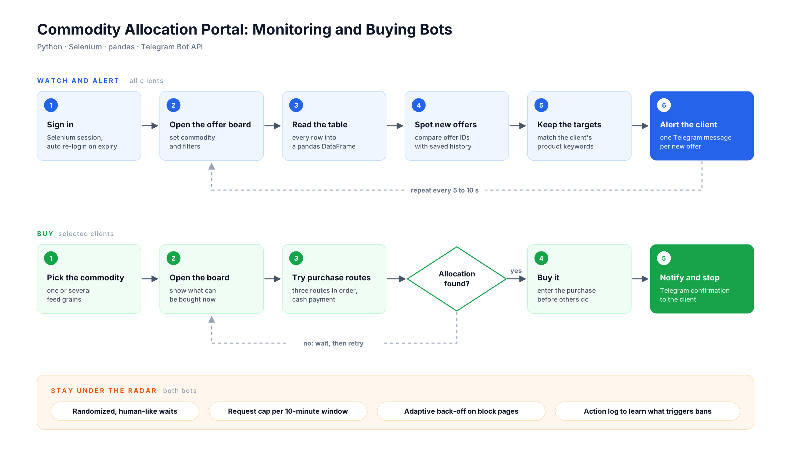

Client work · Automation
Commodity portal monitoring and buying
Buyers on a commodity allocation portal lose good offers because they appear and disappear faster than anyone can refresh a page. I built bots that watch the offer board for them, tell them the moment something relevant appears, and, for some clients, try to secure the purchase.
- Role
- Sole analyst and developer
- Clients
- Several, each with its own setup
- Stack
- Python, Selenium, pandas, Telegram Bot API
- Code
- Private (client work)

The problem
Allocation offers are posted on a government-run portal. Relevant ones are scarce and go quickly. Clients were checking by hand, which meant missed offers, wasted hours, and decisions made after the window had already closed.
What I built
- Watch and alert. A bot signs in, opens the offer board, reads every row into a DataFrame, compares offer IDs with saved history, keeps only the client's target products, and sends one Telegram message per new offer. It repeats every 5 to 10 seconds.
- Buy. For clients who wanted it, a second bot works through three purchase routes in order and stops with a Telegram confirmation when an allocation is secured.
- Stay under the radar. The portal blocks aggressive traffic, so both bots use randomized human-like waits, a cap on requests per 10-minute window, and adaptive back-off when a block page appears. I also built an action log to find out which patterns triggered bans, and tuned the bots from that data.
- Recover on its own. Session expiry, forced re-login and form resubmission pages are detected and handled without a person stepping in.
between checks of the offer board. Clients see a relevant new offer in their Telegram almost as soon as it is posted, instead of whenever they next remember to look.
What it shows
Most of the work was not the scraping. It was understanding how the portal behaves under load, what a client actually needs to see, and how to keep a tool running for weeks without someone babysitting it.
Code is private because it was written for clients. Happy to walk through the design in an interview.